ABOUT
Thailand is in the heart of Southeast Asia.
Cambodia and Laos border the country to the east
and northeast, and Myanmar lies to the northwest.
To the west is the Andaman Sea and the Gulf of
Thailand, southeast of Burma. The long southern
region, connecting with Malaysia, is hilly
and forested. The highest mountains are in
northern Thailand.
CLOTHING
From the 6th to 13th century under the Dvaravati Kingdom, Thai clothing was greatly influenced
by India. Loincloths, gold necklaces, and metal belts were amongst the styles that influenced
fashion within Thailand. During the 7th century, fashion in Thailand was influenced by the Khmer,
with clothing styles such as shorter dresses.
The Ayutthaya Era has influenced the fashion of Central Thailand for nearly 200 years. The most
popular style amongst women is the ankle-length tube skirt. However, older generations of women
wear the traditional ‘jong krabane,’ a style of skirt made of hand-woven cotton gathered,
rolled, and threaded between the legs.
Tribal groups Thai-Lue, Thai Kern, and Thai Yai greatly continue to influence the fashion of
Northern Thailand. Styles include indigo-dyed blouses fastened on the side and ankle-length
tube skirts. The tube-skirts are designed more elegantly for formal occasions with colorful
weaving down the middle and decorated hems.
Across the Southern region of Thailand, men and women don brilliantly colored batik-patterned
sarongs. Women pair their sarongs with loosely fitted lace blouses, worn outside of the sarong
and an open front. The Malaysian ‘yaya’ style influences this popular look. Women will also
wear a shawl that covers both the head and shoulders in compliance with Muslim beliefs.
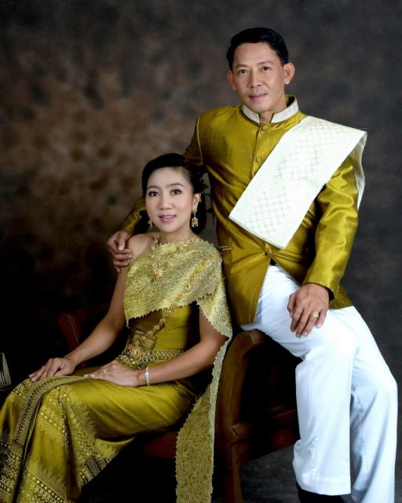
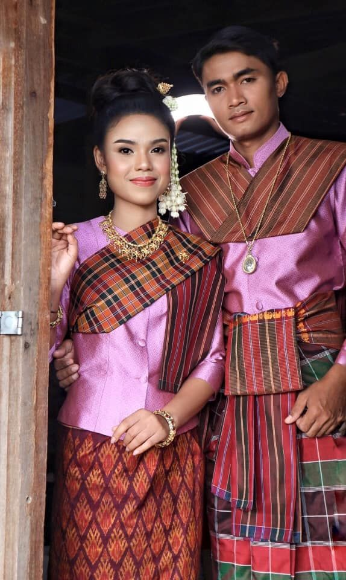
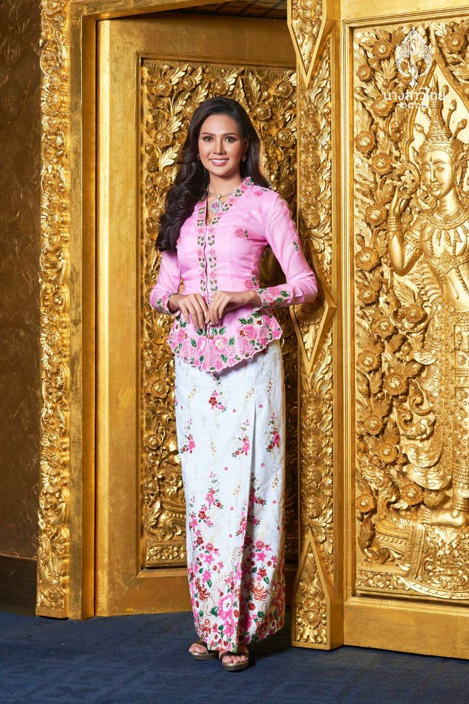
FOOD
When in Thailand, you’ll notice that they eat their rice dishes differently from other Asian countries.
Instead of chopsticks, you’ll be given a fork and spoon at your table setting. The spoon is your
primary eating utensil while the fork is used to manipulate the food onto your spoon. We have
adopted this tradition at home when we eat our own Thai dishes and it is far more efficient.
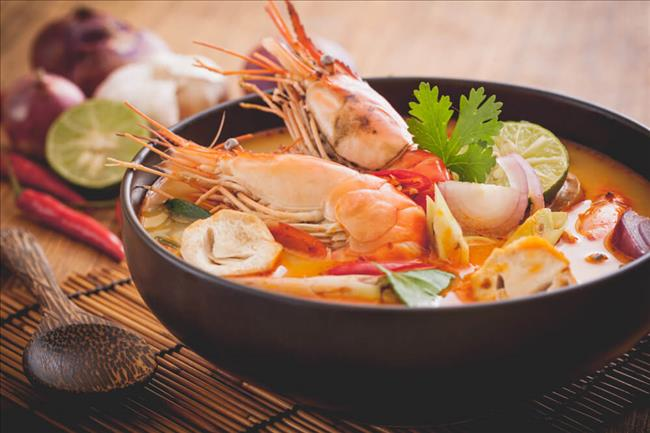
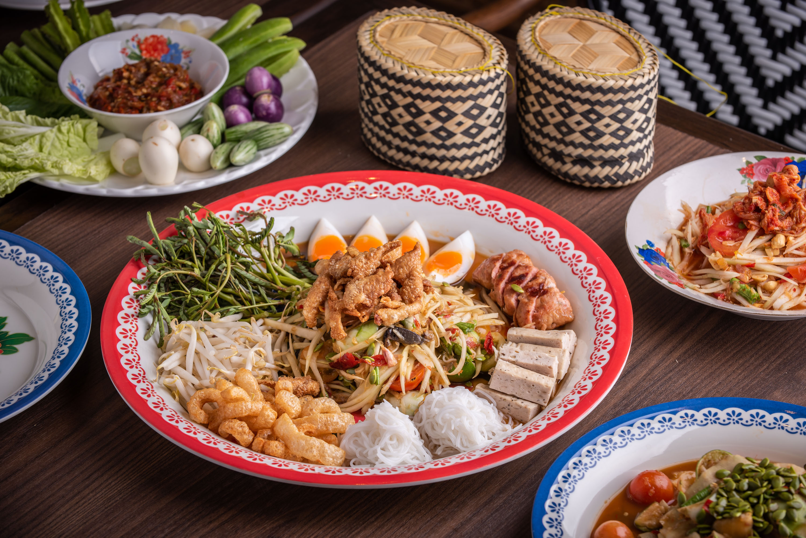
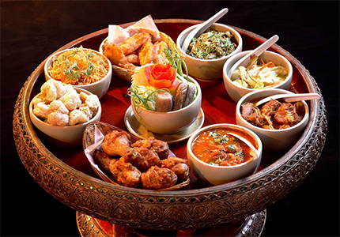
FESTIVALS
As the most important date in the Thai calendar, the Thai New Year or Songkran is
celebrated nationwide through various exciting events. Get ready to be wet during
this season, as splashing water is the norm throughout (better to bring your own
water gun too)!
There’s the Had Yai Midnight Songkran in Songkhla and I San Maha Songkran
Festival in Nong Khai, where you can come and splash water and watch a beauty
pageant. You can also immerse yourself in traditional Thai culture and join the
beautiful Songkran procession during the Ayutthaya Songkran Festival (Old
Capital’s Songkran). The Phra Pradaeng Songkran in Phra Pradaeng, Samut
Prakarn, is formerly known as the “Pak Lat Songkran Festival”, with the notable
addition of a colorful and elaborate Songkran procession staged by the Mon, or
Raman, residents of Phra Pradaeng. Chiangmai also celebrates its own Songkran
Festival with the same spectacular Songkran procession, culture shows and beauty contest.
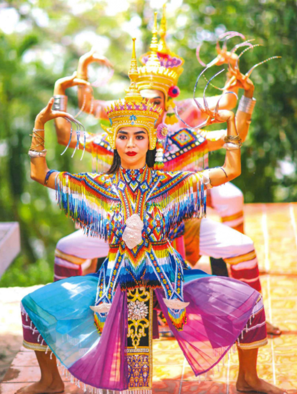
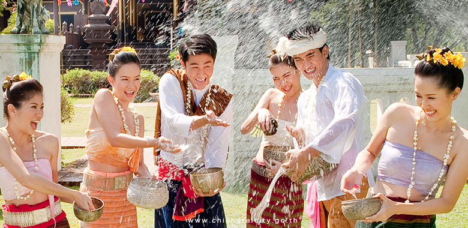
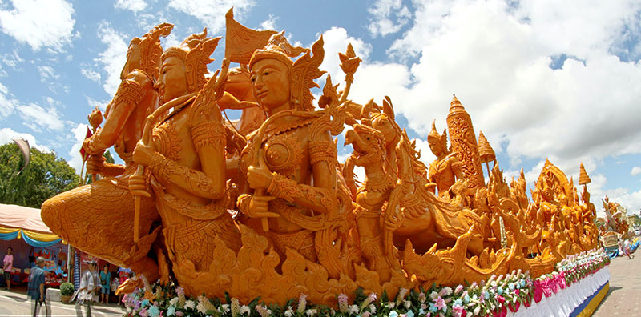
BEACHES
With over 1500 miles (2500km) of coastline and 1430 islands, Thailand’s
beaches deliver everything. Expect everything from otherworldly craggy
limestone formations that appear to be precariously balanced on the turquoise sea,
to colorful coral reefs whose inhabitants are best observed with snorkels and fins.
Along many of those sands, beach shacks and street vendors sell fragrant regional
grilled skewers and noodle dishes.
These beguiling beaches continue to attract all sorts of beach lovers, from
backpack-toting cash-strapped students and families on holiday to those craving a
buzzy scene or salt air pampering. November to March is probably the best time
to visit Thailand to enjoy the most these spots have to offer.
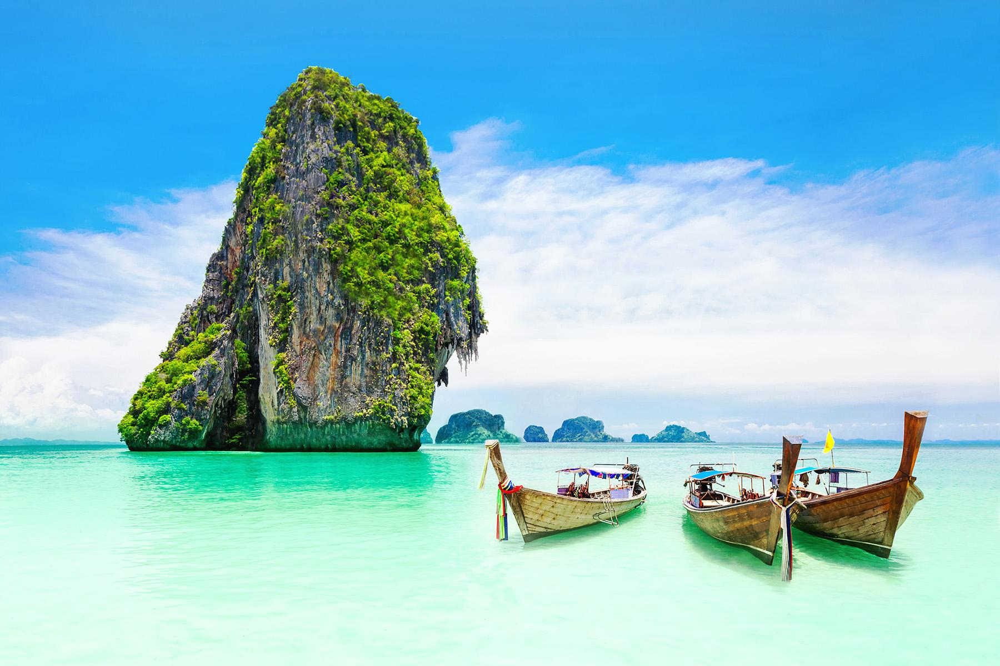
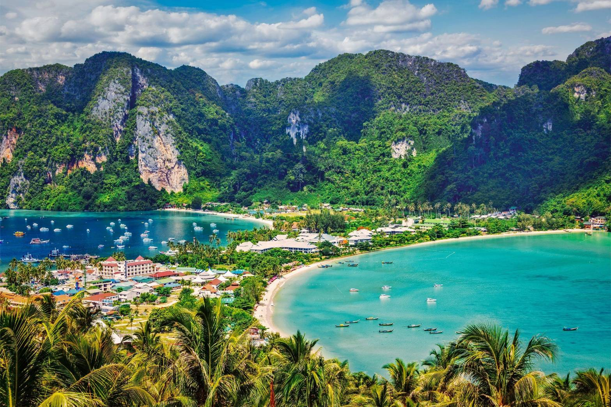